Finite Elements with weighted bases
for the fractional Laplacian
joint work with Félix del Teso
and David Gómez Castro
July 2026
CMAM 2026 Vienna
and David Gómez Castro
Presentation plan
- The fractional Dirichlet problem
- Finite Elements with a weighted basis
- Variational Crimes
The fractional Dirichlet problem
Dirichlet problem for the fractional Laplacian
Fractional Laplacian: integral definition
Let $u: \mathbb{R}^{d} \rightarrow \mathbb{R}$, the fractional Laplacian of $u$ is given by \[ \begin{aligned} (-\Delta)^{s}u(x) &= C_{d,s} \; \textup{P.V.} \int_{\mathbb{R}^{d}} \frac{u(x) - u(y)}{|x-y|^{d + 2s}} \textrm{d}y \\ &= C_{d,s} \; \lim_{\epsilon \rightarrow 0} \int_{\mathbb{R}^{d} \setminus B_{\epsilon}} \frac{u(x) - u(y)}{|x-y|^{d + 2s}} \textrm{d}y, \end{aligned} \] with $C_{d,s} = 4^s \Gamma(d/2 + s)/ (\pi^{d/2} |\Gamma(-s)|)$.
Let $\Omega$ be a bounded domain of $\mathbb{R}^d$, $f \in L^\infty(\Omega)$, $0 < s< 1$
\[ \left\{ \begin{aligned} (-\Delta)^s u(x) & = f(x), & & x \in \Omega, \\ u(x) & = 0, & & x \in \mathbb{R}^d \setminus \Omega. \end{aligned}\right. \]
Dirichlet problem for the fractional Laplacian
Fractional Laplacian: integral definition
The associated bilinear form is given by \[ a(u,v) \coloneqq \frac{C_{d,s}}{2} \iint_{\mathbb{R}^d \times \mathbb{R}^d} \frac{(u(x) - u(y))(v(x) - v(y))}{|x-y|^{d+2s}} \, \textrm{d}x \, \textrm{d}y, \] and the associated seminorm $ [w]_{H^{s}(\mathbb{R}^d)} \coloneqq a(w,w)^{1/2}$. Accordingly, for $s \in (0,1)$ we define \[ H^s(\mathbb{R}^d) \coloneqq \left\{ w \in L^2(\mathbb{R}^d) : [w]_{H^{s}(\mathbb{R}^d)} < \infty \right\}, \] endowed with the norm $\|w\|_{H^{s}(\mathbb{R}^d)}\coloneqq \|w\|_{L^2(\mathbb{R}^d)} + [w]_{H^{s}(\mathbb{R}^d)}$. We then \[ V \coloneqq \{ w \in H^s(\mathbb{R}^d) \text{ such that } w = 0 \text{ in } \mathbb{R}^d \setminus \Omega \}. \]
The weak formulation of the problem is then \[ \text{Find } u \in V \text{ such that } a(u, v) = \int_{\Omega} f(x) v(x) \textrm{d}x \quad \forall v \in V. \]
Generic regularity of the solution to the fractional Dirichlet problem
☞ Ros-Oton, Serra (2014)
\[ |u(x)| \le C \|f\|_{L^\infty(\Omega)} \, d_\Omega(x)^s , \qquad \forall f \in L^\infty (\Omega) \] \[ f \in C^\alpha(\overline{\Omega}) \Longrightarrow u / d_\Omega^s \in C^{\alpha + s}(\overline{\Omega}), \] where $d_\Omega(x) = \text{dist}(x, \R^d\setminus \Omega)$. Roughly speaking the solution $u$ behaves like $d_\Omega^s$ near the boundary of $\Omega$.
\[ \text{Find } \quad u \in V \quad \text{ such that } \quad a(u, v) = \int_{\Omega} f(x) v(x) \textrm{d}x \quad \quad \forall v \in V. \]
A classical approach for a FEM approximation considers a finite dimensional space $V_h \subset V$ and solves
\[ \textrm{Find} \quad {u}_h \in V_h \quad \textrm{such that} \quad a({u}_h, v_h) = \int_{\Omega} f(x) v(x) \textrm{d}x \quad \quad \forall v_h \in V_h \]
A short review of FEM convergence order
☞ Acosta, Borthagaray (2017) classical piecewise linear FEM
\[ \| u - u_h \|_{H^s (\mathbb{R}^d)} \le
\begin{cases}
C\, h^{1/2} \lvert\log h\rvert\, \| f \|_{C^{\frac{1}{2} -s} (\overline{\Omega})}, & \text{if } s \in (0,1/2), \\[4pt]
C\, h^{1/2} \lvert\log h\rvert\, \| f \|_{L^\infty(\Omega)}, & \text{if } s = 1/2, \\[4pt]
C\, h^{1/2} \lvert\log h\rvert^{1/2}\, \| f \|_{C^\beta(\overline{\Omega})}, & \text{if } s \in (1/2,1) \text{ and } \beta > 0.
\end{cases} \]
☞ Bonito, Lei, Pasciak (2019) improved order of convergence $h^{\kappa - s} \lvert\log h\rvert $ for $\kappa \in (s, 3/2)$ under the assumption that the solution $u$ possesses higher regularity at boundary (e.g. $u_(x) = (1-|x|^2)_+$ on $\Omega=B_1(0)$)
☞ Faustmann, Karkulik, Melenk (2022) local interior error estimates of order up to $h^{2-s}$
☞ Faustmann, Marcati, Melenk, Schwab (2022) $hp$-FEM exponential convergence \[\| u - u_N \|_{H^s (\mathbb{R}^d)} \leq C \exp\left(-b\sqrt[4]{N}\right).\]
Regularised distance function
Given the distance function $d_\Omega(x) = \text{dist}(x, \R^d\setminus \Omega)$ for $x\in \mathbb{R}^d$, we consider modified distance functions $\delta$ satisfying for some $c, c_j > 0$: \[ \begin{aligned} & \delta \in C^\infty(\Omega) \cap W^{\sigma,\infty}(\Omega) \text{ with } \tfrac{1}{c} d_\Omega \leq \delta \leq c\, d_\Omega \textup{ in } \mathbb{R}^d \textup{ and} \\ & \textup{$|D^j \delta| \leq c_j \delta^{\sigma - |j|}$ in $\Omega$ for all multi-indices $j$ with $|j| > \sigma$}. \end{aligned} \]
Example
For $\Omega = B_R(x_0) \subset \mathbb{R}^d$ one can choose \[ \delta(x) = R^2 - |x-x_0|^2 \quad \text{or} \quad \delta(x)=R^4-|x-x_0|^4 \]
Generic regularity of the solution to the fractional Dirichlet problem
☞ Abatangelo, Ros-Oton (2020)
\[ \partial \Omega \in C^{\gamma+1}, \ f \in C^{(\gamma -s)_+} (\overline{\Omega}) \ \Longrightarrow \ \frac{u}{\delta^s} \in W^{\gamma,\infty}(\Omega), \] \[ \forall \gamma > 0 \text{ such that } \gamma, \gamma \pm s \notin \mathbb N \]
Finite Elements with a
weighted basis
Finite Elements with a weighted basis
Let $(\mathcal{T}_{h})_{h>0}$ be a uniform, shape regular and conforming set of simplices, such that \[ \overline \Omega \subset \bigcup_{K \in \mathcal{T}_h} \overline K, \qquad \Omega_h \coloneqq \text{interior} \left( \bigcup_{K \in \mathcal{T}_h} \overline K \right). \] We call this set of simplices an "over-triangulation'' of $\Omega$.
We consider the space of continuous piecewise linear functions
\[ \text{PL}(\mathcal{T}_h)
\coloneqq
\{ u \in C(\overline \Omega_h) :
u|_K \text{ is linear for all } K \in \mathcal{T}_h\}. \]
For $V_h$ we then consider the finite dimensional space
\[ V_h \coloneqq \{v : \R^d \to \mathbb R \text{ such that } v |_\Omega \in \delta^s \textrm{PL}(\mathcal{T}_h) \text{ and } v = 0 \text{ in } \R^d \setminus \Omega\}. \]
Finite Elements with a weighted basis
The standard approximation space is $V_h^{\text{FEM}} \coloneqq \textrm{PL}(\mathcal{T}_h)) \cap W_0^{1,\infty}(\Omega)$. The canonical basis of this space is a nodal basis $\{\varphi_i : x_i \in \Omega\}$.
For exmaple $\Omega = (-1,1)$, and consider $h > 0$. We denote the points $x_i = -1 + (i-1)h$ for $i = 1, \cdots, N_h$ We can write the basis for standard FEM for the Dirichlet problem as \[ V_h^{\textup{FEM}} = \textrm{span} \{\varphi_2, \cdots, \varphi_{N_h-1}\}. \] The WFEM approximation space is \[ V_h = \textrm{span} \{\delta^s \varphi_1, \cdots, \delta^s \varphi_{N_h}\}. \]
Finite Elements with a weighted basis
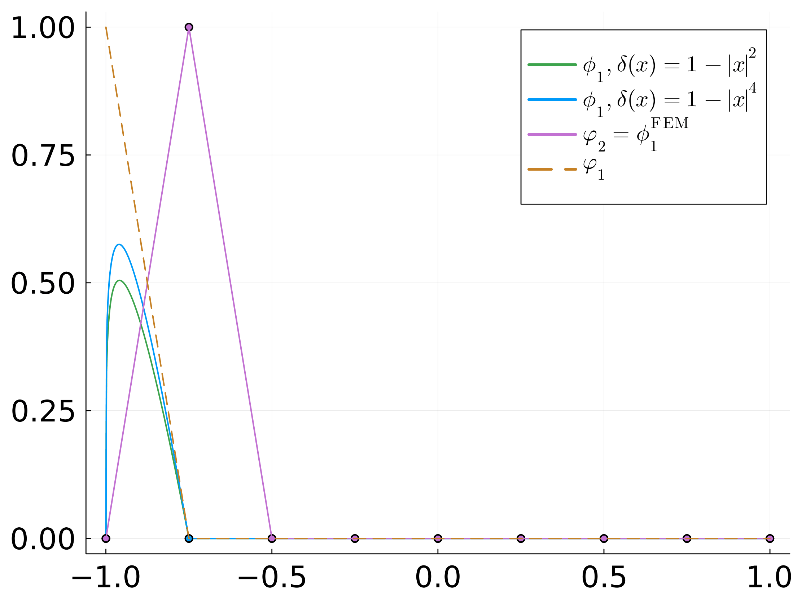
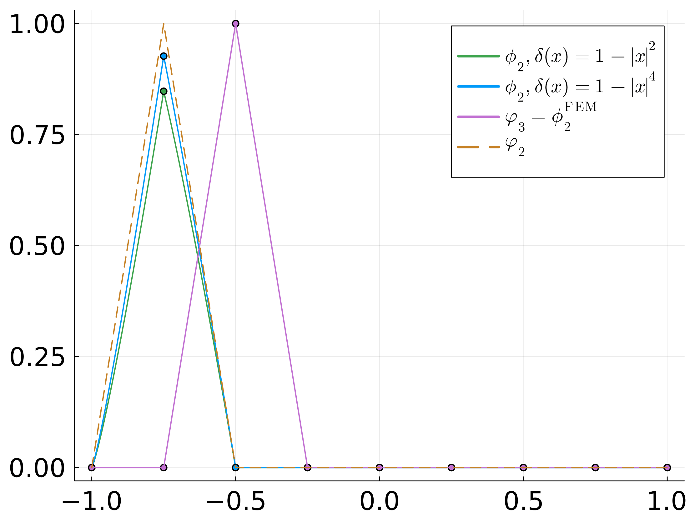
Finite Elements with a weighted basis
Theorem (Convergence rates in $H^s$)
Let $s\in (0,1)$, $\gamma\in (s,3)$ such that $\gamma,\gamma\pm s\not\in\N $, $f\in W^{\gamma-s,\infty}(\Omega)$, $\partial \Omega\in C^{\gamma+1}\cap C^{1,1}$, and $\sigma=\gamma+1$. Let $u$ be the corresponding solution of the fractional Dirichlet problem, $V_h$ be given by \[ V_h = \{v : \mathbb{R}^d \to \mathbb R \text{ such that } v |_\Omega \in \delta^s \text{PL}(\mathcal{T}_h) \text{ and } v = 0 \text{ in } \mathbb{R}^d \setminus \Omega\} \] and $u_h$ be the solution of the discrete FE problem. Then, we have that \[ [u - u_h]_{H^s (\R^d)} \le C h^{\min\{2-s,\gamma-s\}}\lvert\log h\rvert^{\frac{1}{2}} \|f\|_{W^{\gamma-s,\infty}({\Omega})}, \] where $C$ does not depend on $h$.
Finite Elements with a weighted basis
Idea of the proof
Cea's lemma and order of approximation of a suitable "competitor" $J_h u$ , where \[ J_h v = \delta^s E_\alpha r_\Omega I_h E_\mu \frac{v}{\delta^s}, \] $E_\mu$ is an extension operator \[ \begin{aligned} & E_\mu: W^{\mu,\infty}(\overline{\Omega}) \to W^{\mu,\infty}(\R^d), \quad E_\mu u = u \ \text{in } \Omega, \quad \textup{supp}\{E_\mu u\} \subset B_R, \end{aligned} \] $r_\Omega$ is a restriction operator, such that $r_\Omega v = v|_{\Omega}$ and $I_h : C(\R^d) \to \textrm{PL}(\mathcal{T}_h)\subset W^{1,\infty}({\Omega}_h)$ be the piece-wise linear interpolation obtained by sampling on the vertices of the triangles in $\mathcal{T}_h$.
Finite Elements with a weighted basis
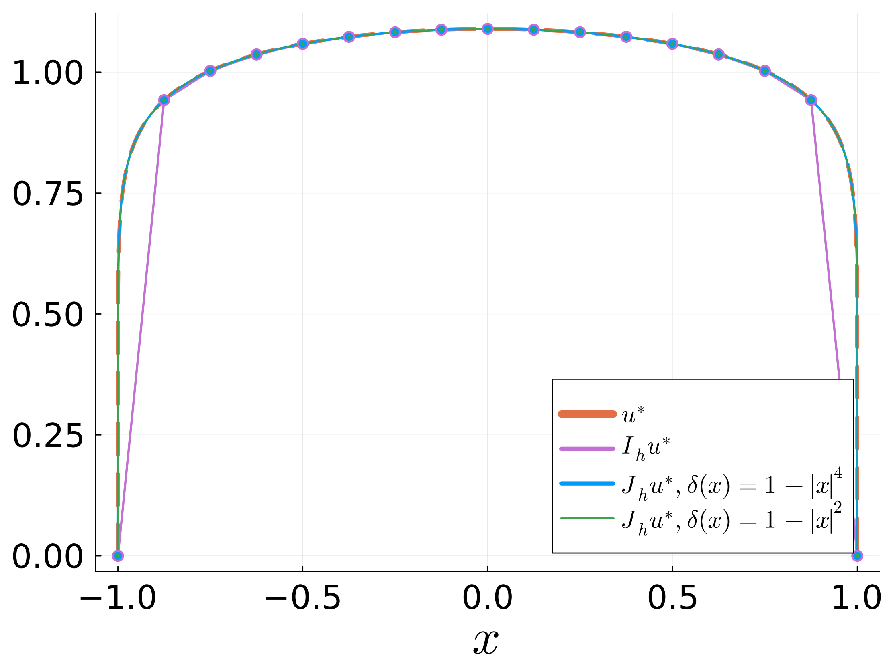
Finite Elements with a weighted basis
Theorem (Convergence rates in $L^2$)
Let the previous hypotheses hold. Additionally assume that $\partial \Omega \in C^{2,1}$. Then we have that \[ \|u - u_h\|_{L^2(\R^d)} \le C h^{\min\{2-s, \gamma -s\} + \alpha} \lvert\log h\rvert^{\frac 3 4} \|f\|_{W^{\gamma-s,\infty}({\Omega})}, \] for all $\alpha \in \left( 0, s \tfrac{4-2s}{4+d}\right)$, where $C$ does not depend on $h$.
Finite Elements with a weighted basis
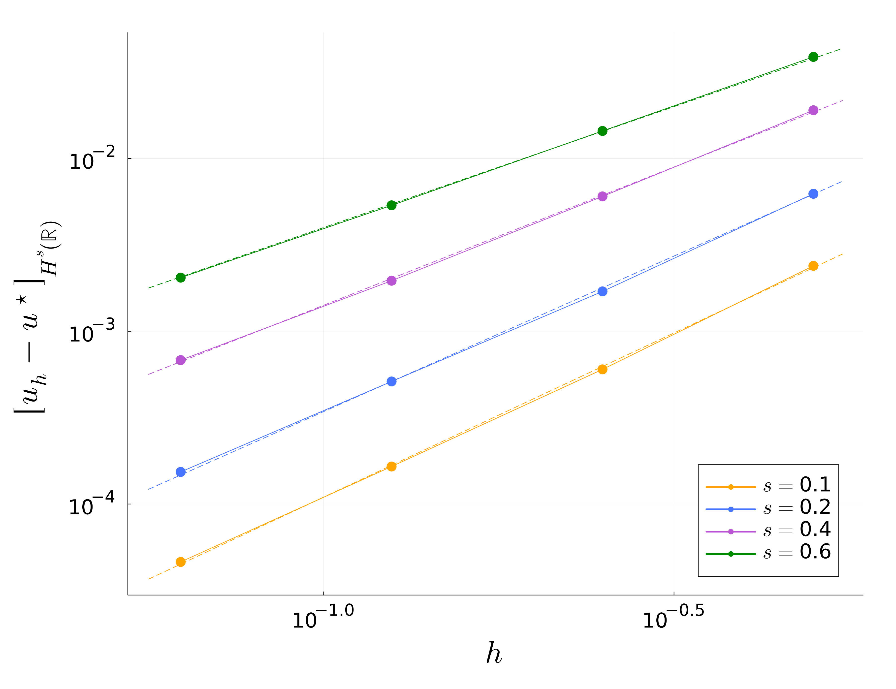
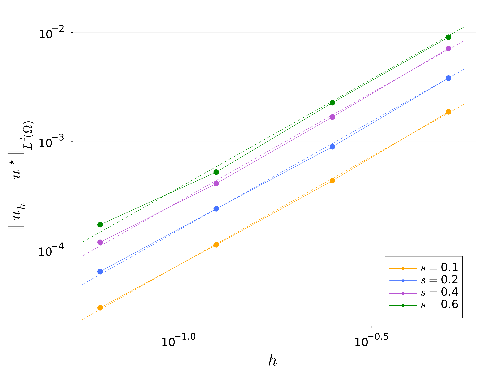
Finite Elements with a weighted basis
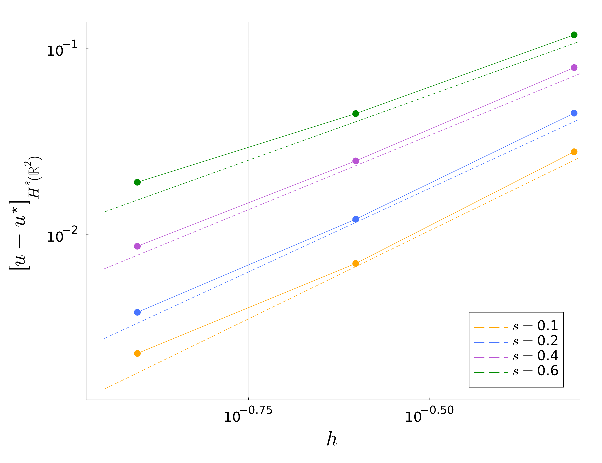
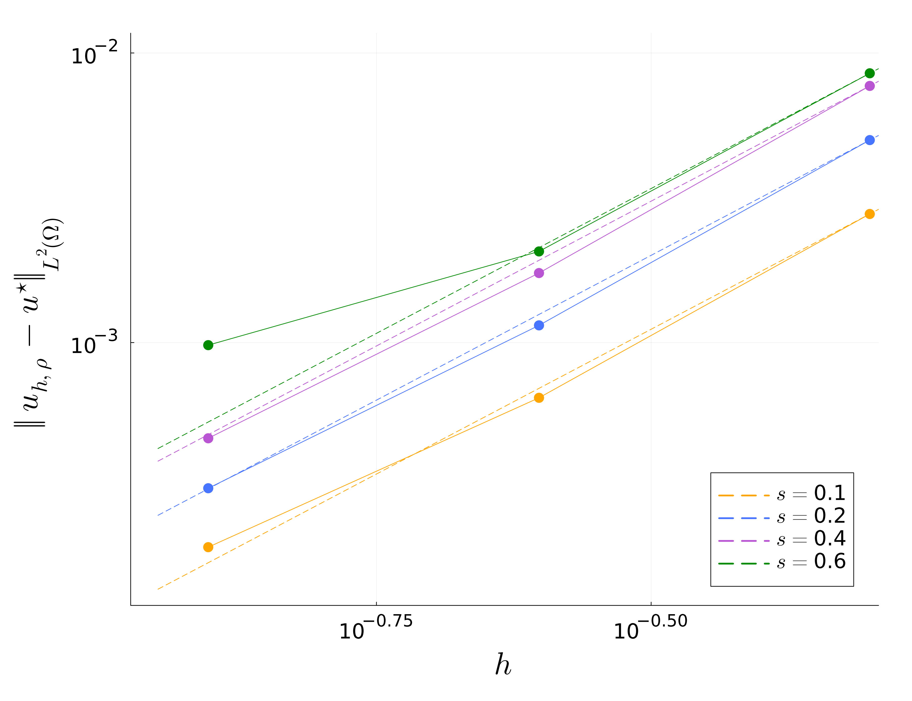
Variational Crimes
How one computes the bilinear form $a(\cdot, \cdot)$?
\[ a(u,v) = \frac{C_{d,s}}{2} \iint\limits_{\mathbb{R}^d \times \mathbb{R}^d} \frac{(u(x) -u(y))(v(x) - v(y))}{|x-y|^{d+2s}} \text{d}x \text{d}y \quad \]
Challenge: double integration over $\mathbb{R}^d$ and singularity $|x-y|^{-d-2s}$
Variational Crimes
``We want [...] to find out which violations of the rules still yield a convergent approximation. In other words we want to find out whether or not crime pays; fortunately for the finite element method, it often does.''
☞ Strang (1972)
Instead of solving the problem \[ \textrm{Find} \quad {u}_h \in V_h \quad \textrm{such that} \quad a({u}_h, v_h) = b(v_h) \quad \text{for all } \quad v_h \in V_h \] consider the approximation \[ \textrm{Find} \quad u_{h,\rho} \in V_h \quad \textrm{such that} \quad a_\rho(u_{h,\rho}, v_h) = b(v_h) \quad \text{for all } \quad v_h \in V_h \] for $\rho>0$.
Variational Crimes
A piecewise constant approximation
Let $0<\rho \ll 1$, $x_k = \rho k$ for $k \in \mathbb Z^d$ and $\varepsilon_\rho \in (\rho, 1)$, $R_\rho \in (1,\infty]$, we consider \[ a_\rho( \phi, \psi) \coloneqq \frac{C_{d,s}}{2} \sum_{\substack{ x_{k}, x_\ell \in Q_{R_\rho} \\ |x_k - x_\ell|_\infty \ge \varepsilon_\rho }} \frac{ (\phi(x_k) - \phi(x_\ell))(\psi(x_k) - \psi(x_\ell)) }{ |x_k - x_\ell|^{d+2s} } \rho^{2d}, \] where we denote the cube $Q_{R} \coloneqq [-R,R]^d$.
Variational Crimes
\[ a_\rho( \phi, \psi) \coloneqq \frac{C_{d,s}}{2} \sum_{\substack{ x_{k}, x_\ell \in Q_{R_\rho} \\ |x_k - x_\ell|_\infty \ge \varepsilon_\rho }} \frac{ (\phi(x_k) - \phi(x_\ell))(\psi(x_k) - \psi(x_\ell)) }{ |x_k - x_\ell|^{d+2s} } \rho^{2d} \]
Theorem
For $R_\rho \ge \rho^{-\frac{1-s}{s}}, \varepsilon_\rho = \rho$ we have that \[ \begin{aligned} |a(\phi, \psi) &- a_\rho(\phi, \psi)| \le \omega_{a, W^{1,\infty}} (\rho) \|\phi\|_{ W^{1,\infty}} \|\psi \|_{W^{1,\infty}}, \\ & \omega_{a,W^{1,\infty}} (\rho) \coloneqq \begin{dcases} \rho & \text{if } s < \tfrac 1 2, \\ {\rho} \log \rho & \text{if } s = \tfrac 1 2, \\ \rho^{2(1-s)} & \text{if } s > \tfrac 1 2 \end{dcases} \end{aligned} \]
Variational Crimes
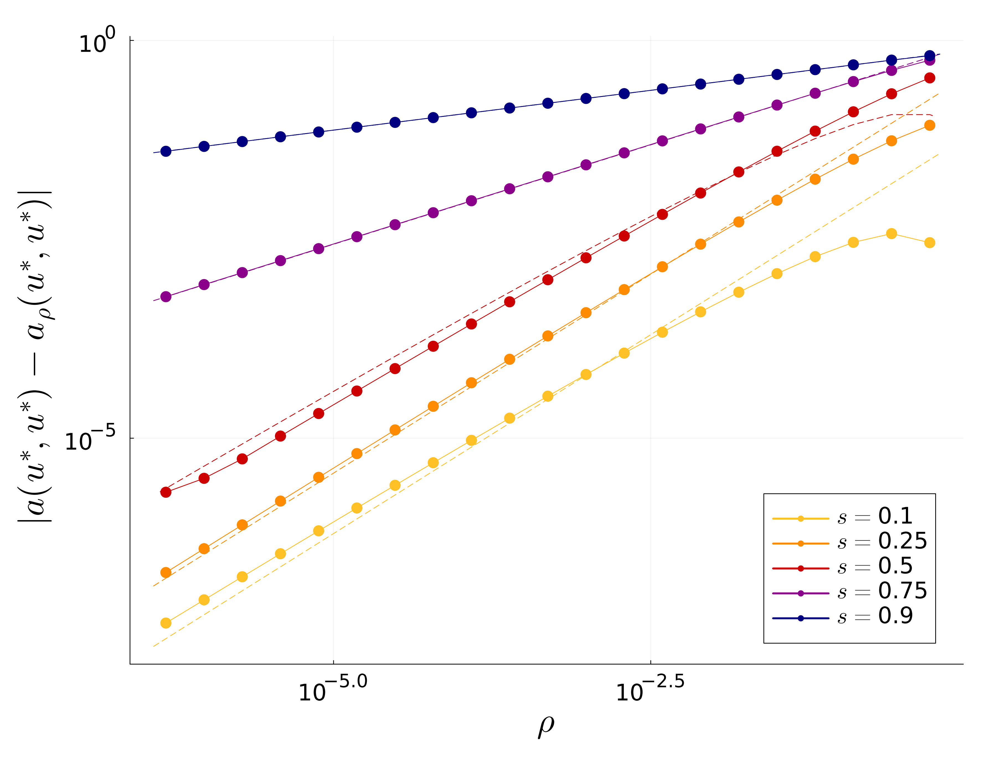
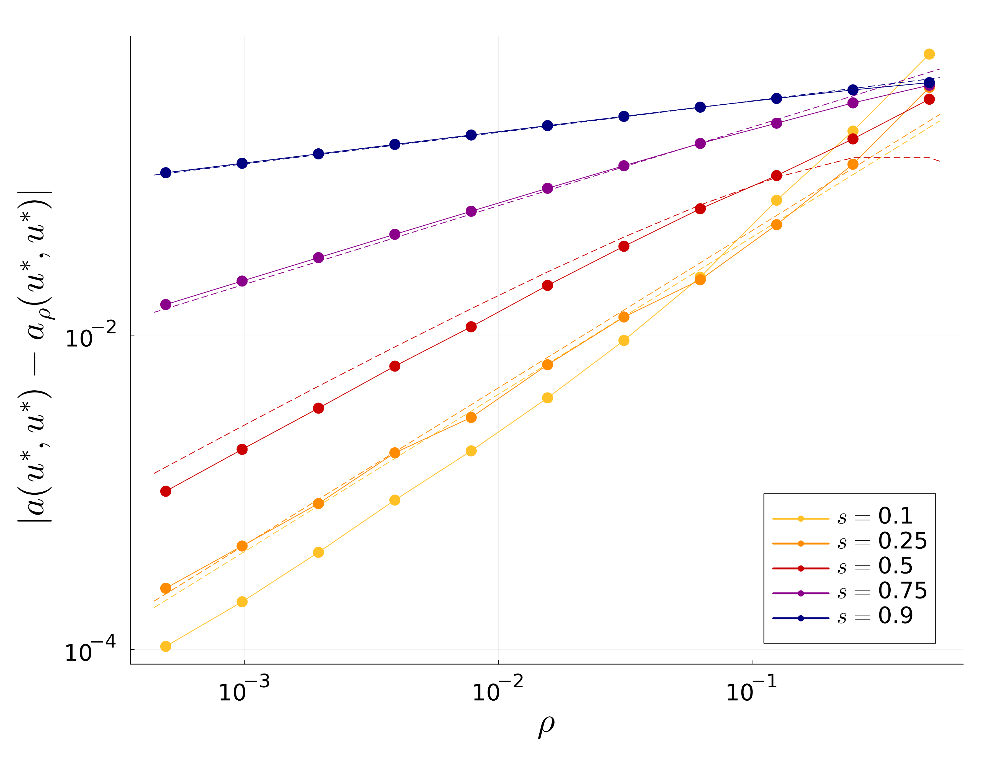
Variational Crimes
Problem: how to compute efficiently \[ a_\rho( \phi, \psi) \coloneqq \frac{C_{d,s}}{2} \sum_{\substack{ x_{k}, x_\ell \in Q_{R_\rho} \\ |x_k - x_\ell|_\infty \ge \varepsilon_\rho }} \frac{ (\phi(x_k) - \phi(x_\ell))(\psi(x_k) - \psi(x_\ell)) }{ |x_k - x_\ell|^{d+2s} } \rho^{2d} \]
Let us first denote \[ K_\rho(|x|) = \frac{C_{d,s}}{2} \begin{dcases} |x|^{-d-2s} & \text{if } |x|_\infty \ge \varepsilon_\rho \\ 0 & \text{otherwise}. \end{dcases} \]
Variational Crimes
Problem: how to compute efficiently \[ a_\rho( \phi, \psi) \coloneqq \frac{C_{d,s}}{2} \sum_{\substack{ x_{k}, x_\ell \in Q_{R_\rho} \\ |x_k - x_\ell|_\infty \ge \varepsilon_\rho }} \frac{ (\phi(x_k) - \phi(x_\ell))(\psi(x_k) - \psi(x_\ell)) }{ |x_k - x_\ell|^{d+2s} } \rho^{2d} \]
We can expand
Variational Crimes
Problem: how to compute efficiently \[ a_\rho( \phi, \psi) \coloneqq \frac{C_{d,s}}{2} \sum_{\substack{ x_{k}, x_\ell \in Q_{R_\rho} \\ |x_k - x_\ell|_\infty \ge \varepsilon_\rho }} \frac{ (\phi(x_k) - \phi(x_\ell))(\psi(x_k) - \psi(x_\ell)) }{ |x_k - x_\ell|^{d+2s} } \rho^{2d} \]
Variational Crimes
The computational bottleneck is the term \[ C_K \coloneqq \rho^d \sum_{x_l \in \mathbb Z^d} K_\rho(|x_l|), \] but the computation becomes easier and faster for $R_\rho = + \infty $
Zeta functions
We can use, in $d=1$ the Riemann zeta function \[ \zeta(s) = \sum_{k=1}^\infty \frac{1}{k^s}. \] and in $d=2$ the Epstein zeta function \[ Z(d,\nu) = \sum_{k \in \mathbb Z^d \setminus \{0\}} |k|^{-\nu}, \qquad \text{ where } \nu > d. \]
Variational Crimes
The computational bottleneck is the term \[ C_K \coloneqq \rho^d \sum_{x_l \in \mathbb Z^d} K_\rho(|x_l|) \]
Zeta functions
We have \[ C_K = \frac{C_{d,s}}{2} \rho^{-2s} \Bigg(Z(d,d+2s) - \sum_{\substack{k\in \mathbb Z^d \\ 0 < |k|_\infty < \frac{\varepsilon_\rho}{\rho}}} |k|^{-d-2s} \Bigg). \]
There are sufficiently accurate numerical implementations for the Riemann zeta function and for the Epstein zeta fucntion we have wrapped a recent C+ package into julia , as EpsteinLib.jl
Variational Crimes
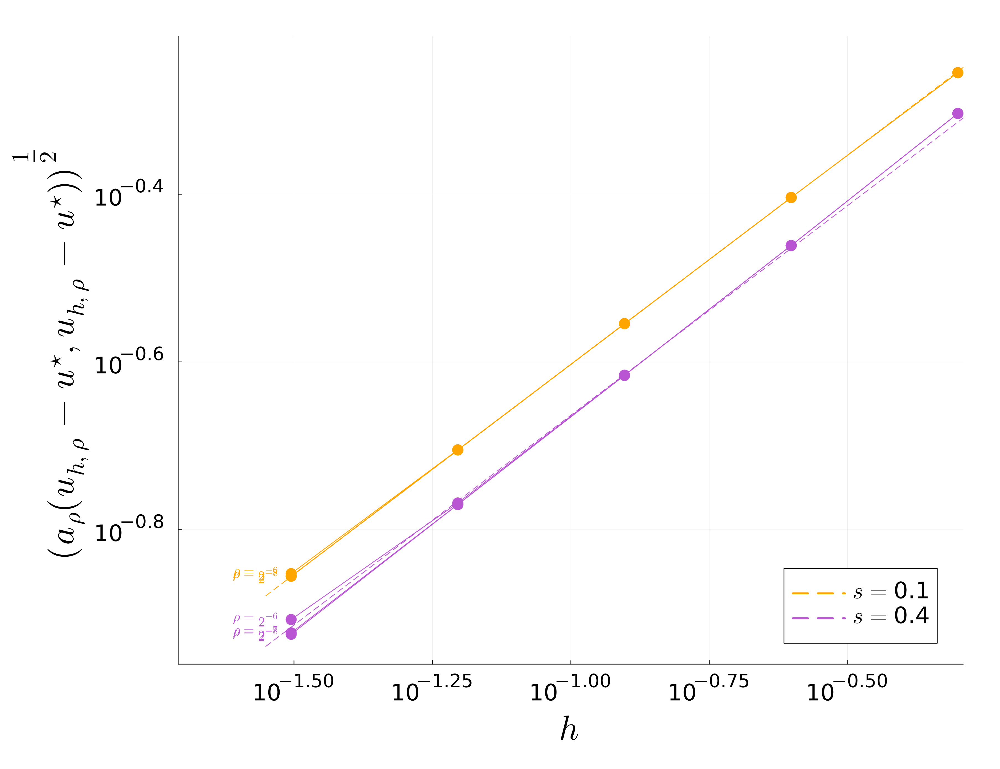
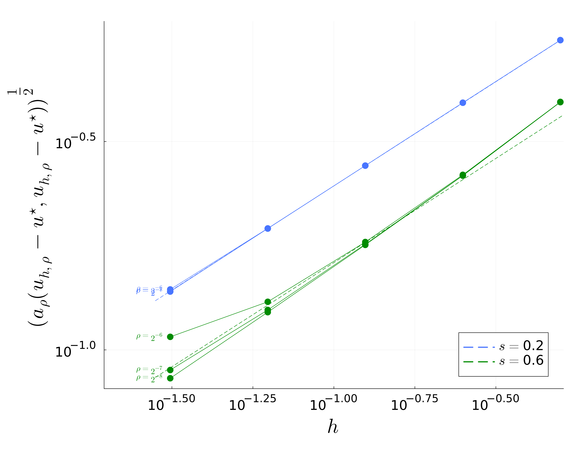
Variational Crimes
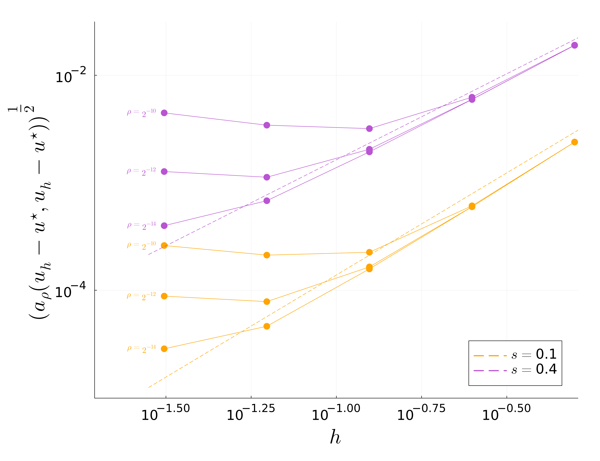
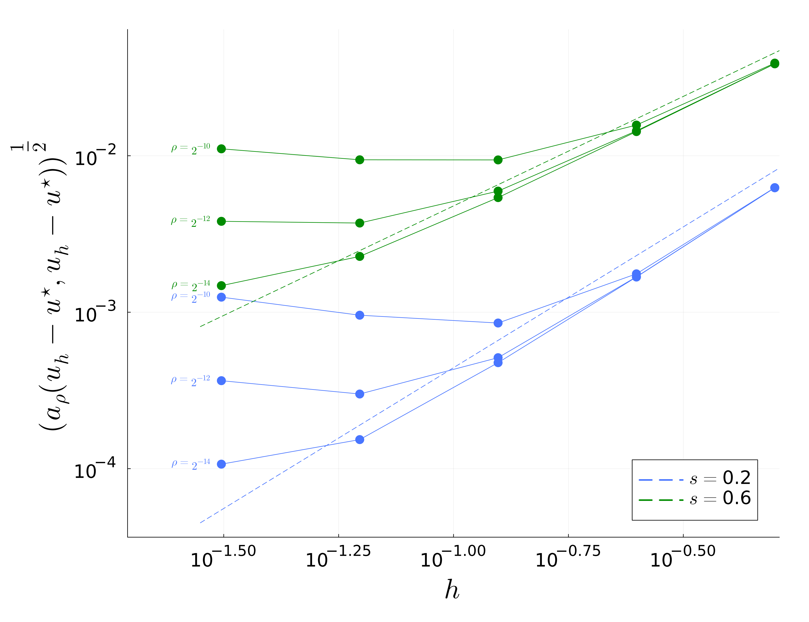
Variational Crimes
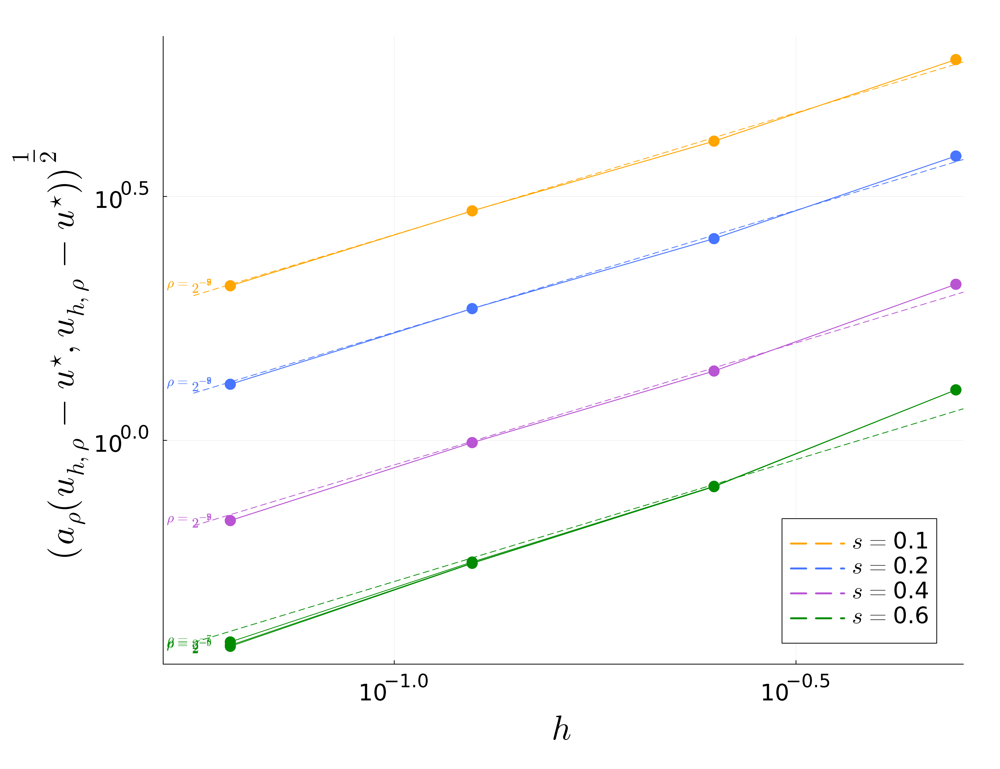
Variational Crimes
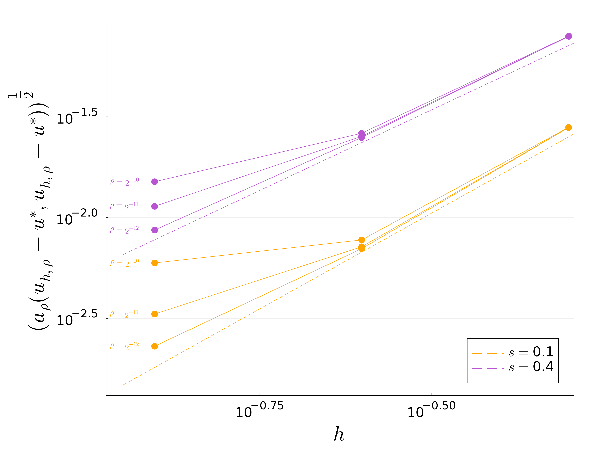
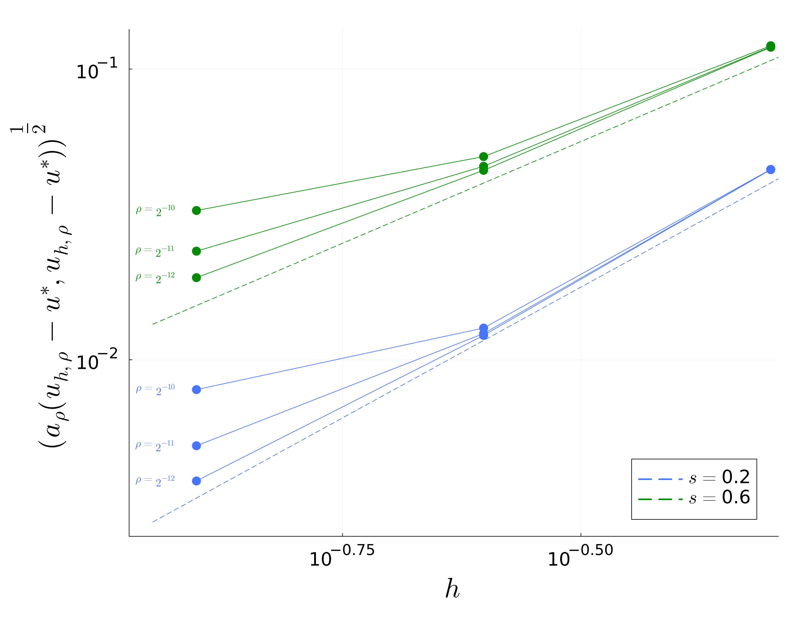
Thank you for the attention
If you want to know more...